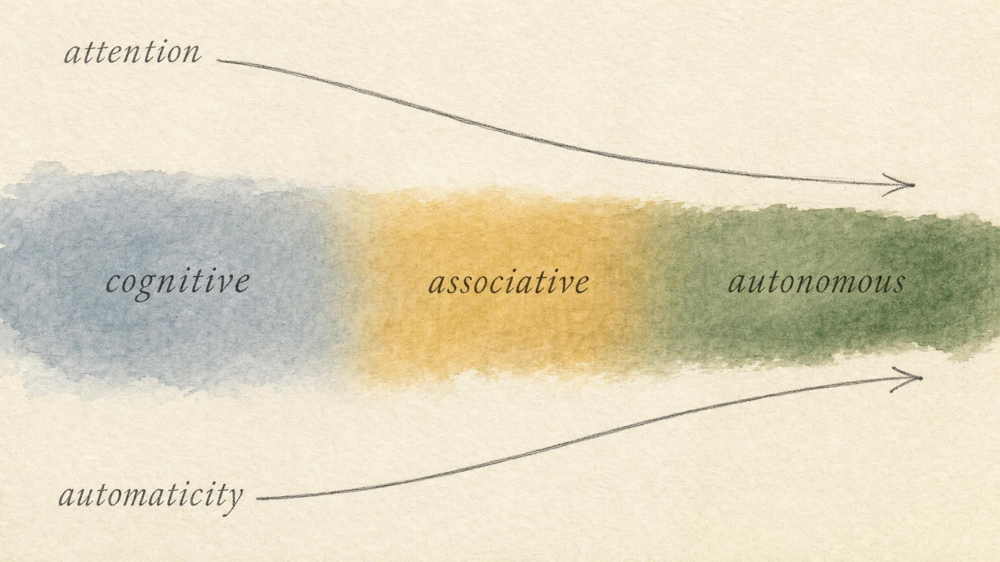
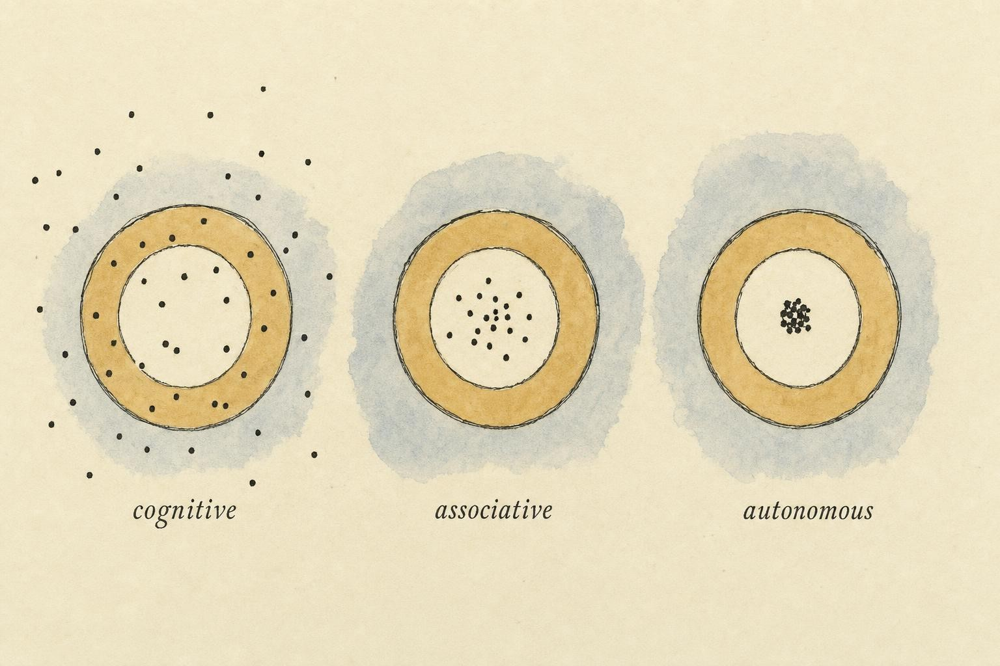
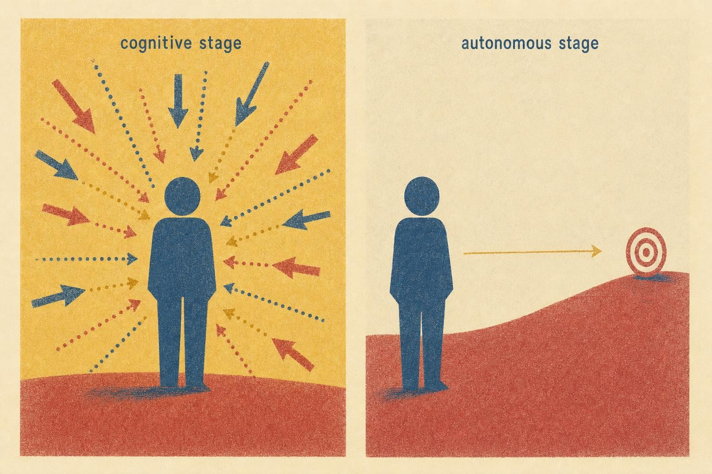

From Clumsy to Automatic
How a movement stops fighting you: the three stages of motor learning, and what practice should look like at each one.
Sunny still remembers the first time she got behind the wheel of a car. Both hands locked at ten and two, the radio off, nobody allowed to talk. She narrated the mechanics to herself, mirror, signal, ease off the clutch, and she still stalled at the light. Fast forward a decade and she drives across town while holding a conversation, adjusting the climate control, and rehearsing what she will say in a meeting. Nothing about the car changed. Everything about her did.
That transformation, from white knuckled, attention devouring effort to something that runs quietly in the background, is not a metaphor for skill acquisition. It is skill acquisition. And if you accept the idea that a well executed movement, a golf swing, a suture, a scale on a violin, a barbell lift, is a coordinated motor pattern rather than a simple act of muscle, then you need a map of how that pattern actually gets built. This chapter is that map.
We will follow Sunny through it, not because her story is a case to be solved, but because a single thread makes an abstract framework concrete. Later in the chapter she takes up a new lift, the front squat, and every stage of learning it will illustrate a stage in this chapter's model. Her story is a thread, not a diagnosis, and we will keep it that way the whole way through.
Why you need a stage model at all
Every new skill feels like chaos before it feels like anything else. A learner staring down a first attempt, whether it is a golf swing, a piano scale, or a barbell held across the front of the shoulders, is not primarily short on muscle. They are short on a coordinated plan for using the muscle they already have. The signal comes before the muscle, and that raises an obvious question: if skill is largely a matter of the signal, how does the signal change with practice? What, specifically, gets better?
The honest answer is that "gets better" hides at least four separate things happening at once. Attention relocates. Movements get more repeatable. Errors shrink and start correcting themselves. And control quietly migrates from slow, deliberate circuits to fast, automatic ones. A stage model matters because it bundles those four shifts into a single diagnostic frame, one you can hold in your head while watching a rep, a scale, a swing, or your own merge onto the highway. Without a model like this, "practice" is just a word for repeating something until it feels different, with no account of what is actually changing underneath the feeling.
This question also closes a loop opened earlier in the course. An earlier chapter argued that a heavy lift is not primarily a feat of muscle but a coordinated motor pattern that muscle happens to execute, and that the signal shaping the pattern comes before the muscle producing it. That argument leaves an obvious follow-up hanging: if a skill is mostly signal, how does the signal itself change as a person practices? This chapter is the direct answer. It is also, deliberately, a general one. Everything below applies whether the skill in question is a barbell lift, a surgical knot, a second language, or a golf swing, because the underlying nervous system does not know or care which domain it is automating.
The framework we will use is the oldest and most durable one in the field, proposed by Paul Fitts and Michael Posner in 1967. They described skill learning as a passage through three stages: cognitive, associative, and autonomous. Nearly six decades of research have refined the edges, but nobody has replaced the core picture, and every modern textbook on motor learning still teaches it (Magill and Anderson, 2017; Schmidt and Lee, 2020). It has survived because it is useful at the bench, not just on the page, and because it applies just as cleanly to a surgeon learning a new technique, a language learner building fluent speech, and an adult beginner learning to lift.
One warning before we start. The three stages are not boxes with walls between them. They are regions on a continuum from fully controlled to fully automatic performance. A given performer can straddle two of them at once, sitting in the autonomous stage for a familiar movement while languishing in the cognitive stage for a new one. You are never diagnosing a person. You are diagnosing a skill, in a person, on a given day.

The three stages are regions on one continuum, not separate boxes." data-image-idx="0" style="display:block;max-width:100%;max-height:75vh;height:auto;width:auto;margin:0 auto;cursor:pointer;">Stage one: cognitive, the effortful, attention hungry beginning
The cognitive stage is where every new skill begins, and it is exactly as awkward as it looks. The learner is trying to answer a very basic question: what am I even supposed to do? They are building a rough mental model of the task, which parts move, in what order, toward what goal, and they are doing it by consciously thinking their way through every step.
Three features define this stage, and you can spot all of them from across the room.
It devours attention
Cognitive stage performance is controlled processing in the sense Schneider and Shiffrin (1977) made precise: serial, effortful, and easily disrupted. The learner cannot do anything else at the same time. Talk to a first day driver at a critical moment and they will miss the turn, not from rudeness but because the conversation and the driving are competing for the same scarce pool of conscious attention. There is no spare capacity, because the movement is consuming all of it.
It is wildly inconsistent
Two attempts at a brand new skill can look like two different tasks entirely. The learner has not yet found a movement solution, so every attempt is a fresh experiment. This high variability is not a defect to be stamped out. It is the visible signature of a system searching the space of possible movements for one that works. Early learning is fragile precisely because it has not yet settled on anything to be stable about.
Errors are large, and the learner cannot fix them alone
Cognitive stage learners make big, obvious errors, and here is the crucial part: they often cannot tell you what went wrong. They know the attempt felt bad. They cannot diagnose why, because they do not yet have the internal reference, the felt sense of "correct," to compare it against. This is why the cognitive stage is the one place where external instruction genuinely does the heavy lifting. The learner literally lacks the equipment to self correct yet, which is not a character flaw. It is simply where the system starts.
Think of a musician meeting a new scale for the first time. First they stare at the fingering chart. Then they play it note by note, eyes locked on their hands, stopping to work out the next finger. It is halting, it is uneven, and if you ask them to play it faster they simply cannot. That is the cognitive stage in audible form. A surgical trainee learning a new suture pattern, or a new driver learning a roundabout, looks the same way underneath a very different surface.
Stage two: associative, refinement and the shrinking of error
Once the learner has the basic idea, once they have stopped asking "what do I do?" and started asking "how do I do it better?", they have entered the associative stage. This is the long middle. Depending on the skill, it can last weeks, months, or years. Most of the movements a person is genuinely competent at but not yet effortless with live here.
The defining work of the associative stage is refinement. The gross pattern is roughly correct. Now the learner is tuning it. Watch what changes.
Variability collapses
Attempts start to resemble each other. The scatter tightens. The learner has found a movement solution and is now grooving it, reinforcing the successful pattern and pruning the unsuccessful variations. Consistency is the headline metric of this stage, and it is measurable. Film ten attempts and they overlay far more cleanly than they did a month earlier.
Efficiency climbs
Early movement is full of wasted effort, muscles fighting each other, jerky corrections, extraneous motion. As the pattern refines, that waste burns off. The movement gets smoother, uses less energy for the same output, and the performer stops fatiguing so quickly from the coordination cost alone. This is why an intermediate performer can often do more total work than a beginner with similar physical capacity. They are not spending energy on internal friction.
Errors shrink, and start self correcting
This is the hinge of the whole stage. In the cognitive stage, the learner could not detect their own errors. In the associative stage, they begin to. They develop an internal reference of correctness, so an attempt that drifts off line now feels wrong, and they can nudge it back, sometimes mid attempt. The job of catching errors is migrating from an outside observer's eyes to the learner's own sense of their body in space, a system we will look at closely in a later chapter. This shift has enormous consequences for how feedback should be delivered, which we get to shortly.
Our musician now plays the scale without the chart, at a moderate tempo, and winces when they hit a wrong note, because they can hear that it was wrong. They cannot yet play it fast without thinking, but they no longer need to consciously plan each finger. They are refining, not decoding. A language learner at the same stage no longer translates word by word, but still has to think before the sentence comes out. A surgical trainee at this stage no longer needs the steps of a suture pattern read aloud, but still narrates the plan silently to themselves before each pass of the needle. In every one of these cases, the observable behavior looks different on the surface, fingers, sentences, needle passes, yet the underlying transition is the same one: an internal reference for "correct" has switched on, and the performer is now their own second set of eyes.

Consistency is the visible signature of the associative stage: the scatter tightens toward the goal." data-image-idx="1" style="display:block;max-width:100%;max-height:75vh;height:auto;width:auto;margin:0 auto;cursor:pointer;">Stage three: autonomous, when the movement runs itself
The autonomous stage is the destination. The skill now runs with minimal conscious attention. Control has been handed off to lower, faster circuits, what Schneider and Shiffrin (1977) called automatic processing: parallel, resistant to interference, and cheap in attentional cost. The learner has freed up their conscious mind for other things.
The tells are the mirror image of the cognitive stage.
It costs almost no attention
The autonomous performer can do the skill and something else at the same time. The experienced driver holds a conversation. The touch typist looks at the screen, not the keys, and thinks about the sentence rather than the letters. A seasoned athlete can be coached on their next attempt while completing the current one. Spare capacity is the surest sign a skill has automated.
It is highly consistent and efficient
Attempt to attempt variability is low, movement is economical, and performance holds up under conditions that would wreck a less practiced skill: fatigue, distraction, pressure, noise. This robustness is what "grooved" really means. A useful diagnostic: the autonomous skill is the one that survives fatigue. A performer who only breaks technically when deeply tired is not a cognitive stage learner having a bad day. They are an autonomous performer whose automatic pattern degrades only when the system is genuinely taxed.
Self correction is fast and largely unconscious
Errors are small, rare, and corrected before the performer has consciously registered them. The stumble is caught before it becomes a fall. This is the point where the skill has become resistant to the very thing that built it, deliberate conscious control, which sets up the single most important lesson in this chapter.
Our musician now plays the scale at full tempo while reading the next passage, or talking to another player, or thinking about phrasing. The fingers simply go. Ask them which finger plays the fourth note and they might have to stop and physically play it to find out. The knowledge has descended below the level of words.
What actually changes: the four shifts, side by side
Now that all three stages are on the table, let us collapse them into the four things that move across the whole arc. When you observe a skill in the wild, these are what you are reading.
1. Attention relocates, from internal to external
This is the shift with the most practical leverage, so we will spend the most time on it. In the cognitive stage, attention is stuck inside, on body mechanics, on which part moves next. As a skill automates, attention is freed to point outward, toward the effect and goal of the movement.
Gabriele Wulf's fifteen year program of research (2013) turned this observation into one of the most reliable findings in the field: an external focus of attention, on the movement's effect on the environment, produces better performance and better learning than an internal focus on the body itself. Tell someone to "push the floor away," an external cue, rather than "contract your quadriceps," an internal cue, and they typically move more cleanly and retain the pattern better. Wulf's review reports this effect across balance tasks, throwing and striking tasks, and complex sport skills, and across beginners and experts alike. The proposed mechanism is exactly what our stage model predicts: an internal focus drags conscious control back into a system that runs better automatically, jamming the very processes that produce smooth movement. An external focus lets automatic control do its job.
Wulf and Rebecca Lewthwaite (2016) later folded this into their broader OPTIMAL theory of motor learning, short for Optimizing Performance Through Intrinsic Motivation and Attention for Learning, which adds that motivation and a sense of autonomy also strengthen the coupling between goal and action. The headline for you is simpler: cueing toward external effects respects automaticity, cueing toward internal mechanics interrupts it. Match the cue to the stage, and match it to the goal, not to the muscle.
2. Consistency rises
Variability falls steadily across the stages: high and chaotic in the cognitive stage, tightening through the associative, minimal in the autonomous. This is the single most reliable visual diagnostic available to an observer. Film a set of attempts. Do they overlay?
3. Efficiency rises
Wasted motion, unnecessary co-contraction, and jerky corrections burn off. The movement does more with less. This is felt by the performer as "it got easier," even when the demand did not change. Sport scientists sometimes measure this directly as a drop in the metabolic or muscular cost of producing the same output, but a performer usually notices it first as reduced soreness, reduced perceived effort, or simply finishing a session less wrecked than they used to for identical work.
4. Error detection descends into the performer
Detection and correction migrate from an outside observer's eyes, in the cognitive stage, to the performer's own conscious sense, in the associative stage, to fast unconscious circuits, in the autonomous stage. Whoever owns error detection should own the feedback, which is the bridge to the most misunderstood topic in this chapter. Notice, too, that these four shifts are not four independent processes running in parallel. They are four readings of the same underlying migration, of control moving from a slow, effortful, conscious system to a fast, cheap, largely unconscious one. Attention, consistency, efficiency, and error detection are simply the four places you can stand to observe that single migration happening.
Feedback should change as competence grows
Here is where most well intentioned instruction goes wrong. The instinct is that more feedback is more helpful. For long term learning, that instinct is backwards, and the evidence has been clear for decades.
Carolee Winstein and Richard Schmidt (1990) ran the study that made the point unavoidable. They compared learners who received knowledge of results, abbreviated KR, information about the outcome of an attempt given after every single trial, against learners who received it only half the time. During practice, the constant feedback group looked better. But on a delayed retention test, the test that actually measures learning rather than momentary performance, the reduced feedback group won. Constant feedback had produced a mirage: good performance that did not stick.
Why? Alan Salmoni, Schmidt, and Charles Walter (1984) had already framed the mechanism as the guidance hypothesis. Frequent feedback acts as a crutch. It guides the learner to good performance in the moment, but it prevents them from developing their own error detection machinery, the internal reference that appears in the associative stage. Lean on the crutch too hard and the leg never strengthens. Worse, constant feedback invites maladaptive trial to trial corrections, where the learner chases every small deviation instead of settling into a stable pattern.
The practical rule that falls out of this: fade the feedback as competence grows. In the cognitive stage, richer and more frequent feedback is appropriate. The learner genuinely cannot self correct, so external information is doing necessary work. As the learner enters the associative stage and their own error detection comes online, feedback should thin out, get delayed, and get less prescriptive. By the autonomous stage, the performer's internal system is faster and more accurate than anything shouted from the sideline. At that point, feedback is not neutral. It can actively interfere.
The over-coaching trap
The most expensive mistake in this whole framework is over-coaching a near autonomous performer. It feels like diligence. It is usually damage.
Two mechanisms combine against you. First, the guidance hypothesis problem: constant correction keeps the learner dependent on outside input and stalls their own self correction. Second, and more acutely, drawing an autonomous performer's conscious attention back to their mechanics forces an internal focus onto a skill that thrives on external focus and automatic control (Wulf, 2013; Wulf and Lewthwaite, 2016). It is, quite literally, asking a system that runs smoothly on autopilot to switch back to manual, and manual is slower, clumsier, and more variable. This is part of the mechanism behind "paralysis by analysis" and performance slumps under pressure. The remedy for a competent performer in a slump is rarely more technical instruction. It is often less.
None of this means autonomous performers need no guidance at all. It means the guidance changes character: environmental design, strategic problems, motivation, decisions about load and volume, occasional external cues, not a running commentary on elbow position. Respect the automaticity that practice already built.

Feedback density should fall as competence rises: the crutch that helped a beginner hinders an expert." data-image-idx="2" style="display:block;max-width:100%;max-height:75vh;height:auto;width:auto;margin:0 auto;cursor:pointer;">How practice is structured matters as much as how much of it there is
So far we have talked about feedback as though the only variable in a practice session is how much information a learner receives. But two other variables shape how a skill moves through these stages just as strongly: how practice attempts are ordered, and how they are spaced out in time. Both findings are counterintuitive, and both are backed by a genuinely large body of evidence.
Blocked versus random practice
Picture two ways of practicing three related skills, say, three different serve types, or three variations of a lift. In blocked practice, the learner repeats skill A many times in a row, then switches to skill B and repeats it many times, then skill C. Each block feels smooth. Performance during the block looks clean almost immediately, because the learner is simply repeating the same solution over and over without having to retrieve a different plan each time.
In random practice, the learner meets A, then C, then B, then A again, in an unpredictable order, so that no two consecutive attempts use the same solution. Random practice looks messy in the moment. Performance during the session is worse, sometimes noticeably worse, than blocked practice.
Here is the surprise. On a delayed retention test, days later, or on a transfer test that asks the learner to apply the skill in a new context, random practice wins, often by a wide margin. John Shea and Robyn Morgan (1979) demonstrated this in the study that founded the field, comparing a barrier knockdown task practiced in blocked and random orders, and found that the blocked group's advantage during acquisition reversed completely on retention and transfer tests. The effect has a name, the contextual interference effect, first proposed for verbal learning and later carried into motor learning by Shea and Morgan. It has since been replicated across sport, surgical, and rehabilitation settings, including a 2024 systematic review and meta-analysis that found high contextual interference, meaning more random ordering, reliably improved retention relative to low contextual interference, meaning blocked ordering.
Why would harder, messier practice produce better learning? The leading explanation is that random practice forces the learner to fully reconstruct the plan for each attempt, rather than simply repeating the plan still sitting active in short term memory from the previous attempt. That reconstruction work is effortful, and effortful retrieval is what tends to make information stick. Blocked practice lets the learner coast on a plan they never actually had to rebuild, which produces fast, comfortable improvement that evaporates once the block ends.
Massed versus distributed practice
A second and related choice is how attempts are spaced across time. Massed practice crowds many repetitions into one long session with little rest. Distributed practice spreads the same number of repetitions across multiple sessions with rest or sleep in between.
John Donovan and David Radosevich (1999) pooled 63 studies and found a clear, moderate advantage for distributed practice over massed practice, an effect they described as robust across a wide range of tasks. Their analysis found the advantage of spacing to be largest for simple motor tasks and to shrink, though not disappear, as tasks became more complex. The mechanism overlaps with the logic of random practice: a gap between sessions allows some forgetting, and the effort of retrieving and re-establishing the skill after that gap strengthens the memory more than an equivalent block of uninterrupted repetition would.
Consider two learners preparing for the same practical exam a month out, one learning a fixed sequence of surgical knots, the other memorizing a set of foreign vocabulary. Both could cram the entire preparation into two long weekend sessions, which is massed practice, or spread the identical number of repetitions across ten short sessions over the month, which is distributed practice. The crammed weekend will feel more productive while it is happening. Progress is visible attempt to attempt, and the learner leaves each session feeling like they have "gotten it." The spaced version will feel slower and more frustrating, because every session opens with a bit of rust that has to be worked off again. The research consistently favors the second learner on the exam itself, precisely because that rust, and the retrieval effort needed to knock it off, is what cements the memory rather than merely refreshing it.
Put blocked versus random and massed versus distributed side by side and a pattern emerges. In both cases, the practice condition that feels best in the room, smooth blocks, long uninterrupted sessions, is the one that teaches the least for the long run. The practice condition that feels worst, scrambled order, sessions broken up by rest, is the one that produces a skill that survives time and pressure. This should sound familiar. It is the same logic as the guidance hypothesis for feedback: comfort during acquisition and durability of learning are not the same thing, and they can trade off against each other directly.
None of this means random or distributed practice is correct at every stage. A true beginner in the cognitive stage, who cannot yet produce the movement at all, usually needs a period of blocked repetition just to build a rough version of the pattern before contextual interference has anything to bite into. The general guidance the literature supports is to lean on blocked, massed practice early, to build a basic pattern, and to shift toward random, distributed practice as the pattern becomes serviceable, to lock it in against forgetting and to prepare it for the unpredictable conditions of real performance.
Putting it to work: diagnosing the stage
Let us make this operational. When you watch a skill, someone else's or your own, run three quick checks. They map directly onto the four shifts already described.
The three-question field test
Can they do it while distracted? If holding a conversation or handling a second task destroys the movement, attention is still captive, cognitive or early associative. If the movement survives a distraction, automaticity is present.
Do the attempts look the same? Film a set. High attempt to attempt variability points cognitive. Tight, overlaying attempts point associative to autonomous. This is the consistency read.
Who catches the errors, and how fast? If every fault has to be pointed out, the learner cannot yet detect their own, cognitive. If they wince and adjust on their own, associative. If errors are rare and corrected before anyone notices, autonomous.
Notice that "how strong" or "how fast" is not on this list. Outcome tells you the result. These three questions tell you the stage, which is what determines the next move.
Worked example: Sunny grooves a new lift
Sunny decided to learn the front squat as an adult beginner. Week one: she is staring at cues, dropping her elbows, losing the bar path, unable to think about anything except where her weight is. Every attempt looks different. A training partner has to tell her what went wrong because she genuinely does not know. That is textbook cognitive stage, so the right move is frequent, clear feedback and simple external cues, "stand tall," "lead with the elbows," and loads light enough that the coordination cost, not the muscular one, is what she is paying. Because she is still building the basic pattern, her early sessions lean blocked: the same cue, the same setup, repeated until something clicks.
Month three: the pattern is grooved. Attempts overlay. She can feel when the bar drifts forward and fixes it on the way up. She still thinks about her setup, but the descent runs mostly on its own. Associative stage, so feedback thins out and gets delayed, "how did that set feel?" before "your third rep drifted," and her own error detection starts doing the work, because it is finally capable of it. This is also the point where mixing the front squat into a varied, interleaved session, alongside a hinge pattern and a carry, starts to pay off more than another block of the same single movement.
Year two: she unracks, and the squat happens. She is thinking about her competition attempt selection, not her elbows. It only breaks down at the very end of a brutal set. Autonomous stage, so the running commentary stops, cues stay external and sparing, and the pattern, already faster and more accurate than any spoken instruction could be, gets to run.
The same lens on yourself
Because none of this assumes you are guiding anyone else, turn it inward. The skill you are learning right now, a lift, an instrument, a language, a technical craft, sits somewhere on this continuum. Diagnose it honestly. If you are in the cognitive stage, seek out feedback and do not be ashamed of the variability. It is the system working as intended, and blocked, repetitive practice is a reasonable place to start. If you are associative, start weaning yourself off constant outside correction, trust your growing internal sense, and start mixing in variation and spacing rather than grinding the same block. If you are autonomous and slumping, the answer is almost never to think harder about mechanics. It is to get out of your own way and point your attention back at the goal.
The learner passes from a stage in which performance is under close cognitive control to one in which it is largely automatic and freed from the need for attention.
After Fitts & Posner, Human Performance (1967)
Where this framework stops
Before we close, it is worth being explicit about what a stage model can and cannot tell you. This chapter gives you a way to read a skill, cognitive, associative, or autonomous, and a set of evidence based defaults for feedback and practice structure at each stage. It does not give you a way to diagnose why a specific person's movement is breaking down, whether that cause is technical, physical, or something an injury or a movement disorder would explain. Persistent pain, a sudden loss of a previously automatic skill, or a movement that will not stabilize despite appropriate practice are signals to involve a qualified professional, not signals to practice harder or cue more precisely.
This matters because the vocabulary in this chapter is seductively general. "Cognitive stage," "regressed to an earlier stage," and "the pattern broke down" are descriptive terms borrowed from motor learning research, and they are genuinely useful for reading an ordinary skill in an ordinary learner. They were never built to explain a neurological event, a tremor, a sudden asymmetry, or a loss of coordination with a medical cause, and stretching them to cover those situations does real harm, because it offers a tidy, practice-focused explanation for something that may need an entirely different kind of attention.
Sunny's story is a useful illustration here too. Nothing in her front squat progression required a clinician. It was ordinary skill acquisition, exactly what this chapter describes. But if a learner's coordination suddenly changes, if a previously smooth movement becomes clumsy again for no practice related reason, or if pain enters the picture, the right next step is a qualified evaluation, not a deeper read of a motor learning framework. Knowing where a model like this one stops applying is part of using it well.
Why the boundaries blur, and why that is fine
A last honest caveat. Real skills do not announce their stage transitions, and no single behavior gives a clean reading. A tired autonomous performer can briefly look associative. A cognitive stage learner who happens to produce one good attempt can look further along than they are. The stage is a property of a system's typical behavior, not of any one attempt.
Read across multiple observations, weight the three-question test over any single tell, and remember that the whole point of the model is to be approximately right in a way that changes your decisions: how you cue, how much you feed back, how you structure practice, and when to simply get out of the way. A model that does that is doing its job even with fuzzy borders.
Key Takeaways
- Motor learning progresses along a continuum through three stages, cognitive (effortful, variable, attention hungry), associative (refining, consistent, self correcting), and autonomous (automatic, efficient, low attention), first mapped by Fitts and Posner (1967).
- Four things shift across the arc: attention relocates from internal to external, consistency rises, efficiency rises, and error detection descends from an outside observer's eyes into the performer's own fast circuits.
- An external focus of attention beats an internal one because it protects automatic control; cueing toward mechanics forces a smooth system back into slow, manual operation (Wulf, 2013; Wulf and Lewthwaite, 2016).
- Feedback should be faded as competence grows. Constant feedback flatters short term performance but degrades long term learning by preventing self correction, the guidance hypothesis (Salmoni et al., 1984; Winstein and Schmidt, 1990).
- Practice structure matters as much as feedback: random, interleaved practice and distributed, spaced-out sessions feel worse in the moment but produce far better retention than blocked, massed practice, the contextual interference effect (Shea and Morgan, 1979) and the spacing effect (Donovan and Radosevich, 1999).
- Over-coaching a near autonomous performer is the most expensive mistake in the framework: it both breeds dependency and jams automatic control.
- Diagnose the stage with three field questions: Can they do it while distracted? Do the attempts overlay? Who catches the errors, and how fast?
We kept referring to an "internal sense of correctness" that comes online in the associative stage and lets a performer catch their own errors. That sense has a name and a physiology: proprioception, the body's system for knowing where it is without looking. The next chapter opens up that system, how reflexes and proprioceptive feedback mature as a skill automates, and why the fast, low circuits we have been calling "automatic" are exactly where control ends up living.
References
Donovan, J. J., & Radosevich, D. J. (1999). A meta-analytic review of the distribution of practice effect: Now you see it, now you don't. Journal of Applied Psychology, 84(5), 795-805. https://doi.org/10.1037/0021-9010.84.5.795
Fitts, P. M., & Posner, M. I. (1967). Human performance. Brooks/Cole.
Magill, R. A., & Anderson, D. I. (2017). Motor learning and control: Concepts and applications (11th ed.). McGraw-Hill.
Salmoni, A. W., Schmidt, R. A., & Walter, C. B. (1984). Knowledge of results and motor learning: A review and critical reappraisal. Psychological Bulletin, 95(3), 355-386. https://doi.org/10.1037/0033-2909.95.3.355
Schmidt, R. A., & Lee, T. D. (2020). Motor learning and performance: From principles to application (7th ed.). Human Kinetics.
Schneider, W., & Shiffrin, R. M. (1977). Controlled and automatic human information processing: I. Detection, search, and attention. Psychological Review, 84(1), 1-66. https://doi.org/10.1037/0033-295X.84.1.1
Shea, J. B., & Morgan, R. L. (1979). Contextual interference effects on the acquisition, retention, and transfer of a motor skill. Journal of Experimental Psychology: Human Learning and Memory, 5(2), 179-187. https://doi.org/10.1037/0278-7393.5.2.179
Winstein, C. J., & Schmidt, R. A. (1990). Reduced frequency of knowledge of results enhances motor skill learning. Journal of Experimental Psychology: Learning, Memory, and Cognition, 16(4), 677-691. https://doi.org/10.1037/0278-7393.16.4.677
Wulf, G. (2013). Attentional focus and motor learning: A review of 15 years. International Review of Sport and Exercise Psychology, 6(1), 77-104. https://doi.org/10.1080/1750984X.2012.723728
Wulf, G., & Lewthwaite, R. (2016). Optimizing performance through intrinsic motivation and attention for learning: The OPTIMAL theory of motor learning. Psychonomic Bulletin & Review, 23(5), 1382-1414. https://doi.org/10.3758/s13423-015-0999-9